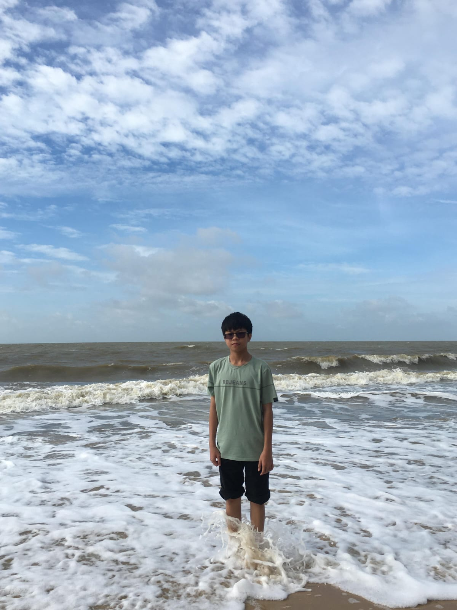

Halo, Saya Samuel Azzuri Lucky
Siswa X TKJ 2 - SMK Kristen Immanuel Pontianak
Saya siswa dari kelas X TKJ 2 di SMK Kristen Immanuel Pontianak. Saya belajar tentang teknologi, utamanya di bidang komputer dan pemrograman web.
Saya mulai tertarik membangun website sejak mengenal HTML di kelas X. Saya ingin terus mengembangkan kemampuan saya dan mempelajari hal-hal baru yang berguna.